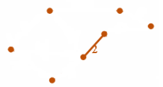

Лекція 3
Операції над графами та дерева
У цій лекції ви дізнаєтесь:
- які операції можна виконувати над графами;
- що таке дерева та остовні дерева;
- як вибирати алгоритм для мінімального остова.
Операції над графами
Операції над графами дозволяють змінювати структуру графа або будувати новий граф із наявних.
Основні операції
- Доповнення графа - граф з тими самими вершинами, але з ребрами, яких не було у вихідному графі.
- Частковий граф - граф з тією самою множиною вершин і підмножиною ребер.
- Підграф - граф, побудований на підмножині вершин і відповідних ребрах.
- Об'єднання - граф, що містить усі вершини й ребра двох графів.
- Перетин - граф зі спільних вершин і спільних ребер.
- Кільцева сума - об'єднання без спільних ребер.

Слайд із презентації, де показано граф G та його підграфи.
Дерева
Дерево - це зв'язний ациклічний граф. У дереві між будь-якими двома вершинами існує рівно один простий шлях.
Остовне дерево
Остовне дерево графа має ті самі вершини, що й початковий граф, але містить лише частину ребер так, щоб не було циклів і граф залишався зв'язним.
Мінімальне остовне дерево
Для зваженого графа часто потрібно знайти остовне дерево з мінімальною сумою ваг ребер.
- Алгоритм Крускала сортує ребра за вагою та додає найменші ребра, якщо вони не утворюють цикл.
- Алгоритм Пріма починає з однієї вершини й щоразу додає найменше ребро, яке з'єднує побудовану частину з новою вершиною.
Питання для перевірки
- Що таке доповнення графа?
- Чому дерево не може містити цикл?
- У чому різниця між алгоритмами Крускала та Пріма?